Proyecto Vitalia · Asignatura Ingeniería Web · Análisis de requerimientos, diseño de interfaz y prototipo navegable centrado en el usuario.
El diseño de interfaces ocupa un lugar determinante en el ciclo de vida de un proyecto web porque permite validar la estructura, la apariencia y la interacción de un producto antes de invertir en su construcción técnica. En este proceso, el wireframe, el mockup y el prototipo representan tres niveles progresivos de concreción: del esquema estructural a la propuesta visual y, finalmente, a la simulación de la experiencia de uso.
La presente Actividad de Construcción Aplicada aborda la temática de una página de recomendaciones saludables. El problema que motiva la propuesta es la dificultad que enfrentan muchas personas para encontrar información confiable, organizada y aplicable sobre alimentación, actividad física, descanso y bienestar emocional. A ello se suman la sobrecarga de contenidos, la falta de personalización y la escasa continuidad de los hábitos. Para responder a esta necesidad se diseñó Vitalia, un producto digital que organiza recomendaciones en cuatro áreas, las adapta al perfil de salud del usuario y facilita su seguimiento mediante favoritos y un registro semanal de hábitos.
El alcance del proyecto comprende el análisis argumentado de cinco requerimientos funcionales (gestión de usuarios y perfil de salud, gestión de contenidos, búsqueda y filtrado, personalización y favoritos con seguimiento de hábitos) y cinco requerimientos no funcionales (rendimiento, escalabilidad, seguridad y privacidad, experiencia de usuario y compatibilidad con dispositivos). A partir de ese análisis se construyeron un wireframe de baja fidelidad, un mockup de alta fidelidad y un prototipo navegable con ocho vistas principales: inicio, explorar, detalle, inicio de sesión y registro, perfil de salud, favoritos, seguimiento de hábitos y gestión de contenidos para el rol administrador.
En cuanto a las herramientas, el wireframe se elaboró con HTML y CSS en escala de grises para garantizar que la estructura no se viera condicionada por decisiones visuales. El mockup y el prototipo se construyeron con HTML5, CSS3 y JavaScript, sin frameworks de interfaz, con el fin de demostrar el dominio de los fundamentos web y de obtener un producto autocontenido que funciona sin servidor. La tipografía se apoyó en Google Fonts (Poppins e Inter) y la iconografía se dibujó como SVG en línea. Las capturas que ilustran este informe se generaron directamente desde el prototipo mediante Chrome DevTools Protocol, de modo que las figuras corresponden al producto real y no a una simulación independiente. Figma, Balsamiq y Adobe XD se tomaron como referentes del flujo de trabajo de diseño; la implementación en código permite, además, exportar o replicar el sistema visual en cualquiera de estas herramientas si el equipo lo requiere.
El informe se organiza conforme a la estructura solicitada: portada, introducción, objetivos, análisis de requerimientos funcionales y no funcionales, wireframe, mockup, prototipo, conclusiones y referencias. Cada requerimiento se analiza de manera argumentada y se relaciona con las pantallas y decisiones de diseño que lo resuelven, de forma que el lector pueda verificar la trazabilidad entre lo solicitado y lo entregado.
Diseñar y construir el wireframe, el mockup y un prototipo navegable de una página de recomendaciones saludables, aplicando un análisis argumentado de requerimientos funcionales y no funcionales y un enfoque centrado en la experiencia del usuario, desde la concepción inicial hasta la entrega del producto digital.
El análisis de requerimientos funcionales parte de una pregunta central: ¿qué debe poder hacer el usuario y cómo se traduce esa necesidad en una decisión de interfaz verificable? Para responderla, cada requerimiento se interpretó en términos de actores, tareas, información y reglas de negocio; posteriormente se identificaron las pantallas y componentes que lo resuelven y se definieron criterios de aceptación. La Tabla 1 sintetiza la trazabilidad general y los apartados siguientes profundizan en la argumentación.
| Requerimiento | Interpretación | Pantallas / componentes | Evidencia |
|---|---|---|---|
| RF1 Usuarios y perfil de salud | Registro, autenticación, roles y datos de salud para personalizar. | Login/registro, perfil de salud, encabezado de usuario, puerta de administración. | Figuras 5, 6, 14 y 15; rutas #/login, #/perfil. |
| RF2 Contenidos saludables | Catálogo categorizado y CRUD de recomendaciones por parte del administrador. | Inicio, explorar, detalle, gestión de contenidos. | Figuras 9 y 18; ruta #/admin. |
| RF3 Búsqueda y filtrado | Búsqueda textual combinada con categoría, nivel, duración y orden. | Buscador del inicio, pantalla explorar, estado vacío. | Figuras 3, 12 y 20; ruta #/explorar. |
| RF4 Personalización | Orden y selección de recomendaciones según objetivo, actividad y alergias. | Sección “Para ti”, aviso de afinidad, advertencia de alérgenos, orden del catálogo. | Figuras 11 y 13; cambio de objetivo en el perfil. |
| RF5 Favoritos y hábitos | Guardar recomendaciones y registrar el cumplimiento diario de hábitos. | Botón de favoritos, badge, vista de favoritos, seguimiento semanal. | Figuras 7, 8, 16 y 17; rutas #/favoritos y #/habitos. |
La gestión de usuarios no se limita a crear una cuenta: implica reconocer dos roles con necesidades distintas (usuario y administrador), permitir el acceso seguro, conservar la sesión y construir un perfil de salud que sirva como insumo para personalizar el contenido. El perfil debe recoger edad, sexo, peso, altura, nivel de actividad, objetivo principal, alergias o restricciones y notas de salud, evitando solicitar información que no tenga una finalidad clara.
Decisiones de diseño. Se diseñó una pantalla de autenticación con dos pestañas —iniciar sesión y crear cuenta— para reducir la carga cognitiva y evitar duplicar rutas. El formulario de registro incorpora validaciones visibles (campos obligatorios, longitud mínima de contraseña, coincidencia de contraseñas y aceptación de la política de tratamiento de datos). El perfil se organiza en bloques: datos personales, perfil de salud, preferencias y privacidad. Se añadió un indicador de porcentaje de perfil completo y un cálculo orientativo del índice de masa corporal (IMC), no como diagnóstico médico sino como dato informativo que ayuda a comprender la relación entre peso y altura. La sección de privacidad permite eliminar la cuenta y los datos almacenados, lo que refuerza el control del usuario.
Implementación en el prototipo. El encabezado refleja el estado de la sesión: muestra “Ingresar” cuando no hay usuario y las iniciales y el nombre cuando la sesión está activa. El rol administrador habilita una entrada adicional en el menú (“Contenidos”) y protege la ruta #/admin mediante una puerta de acceso. Se incluyeron dos cuentas de demostración (demo@vitalia.co / demo123 y admin@vitalia.co / admin123) para facilitar la revisión académica sin necesidad de crear datos nuevos. En esta versión los datos se guardan en localStorage; en un entorno productivo se reemplazaría por autenticación con servidor, hash de contraseñas y sesiones seguras, como se explica en RNF3.
Criterios de aceptación. El usuario puede registrarse, iniciar sesión, cerrar sesión, editar su perfil y eliminar sus datos; el administrador accede a la gestión de contenidos; los campos obligatorios impiden el envío y los mensajes de error son comprensibles; el perfil conserva la información entre visitas dentro del mismo navegador. Evidencia: Figuras 5, 6, 14 y 15.
El contenido es el núcleo del producto. Se requiere un catálogo organizado en cuatro categorías —alimentación, actividad física, descanso y bienestar— con metadatos que permitan filtrar y comprender cada recomendación: título, resumen, descripción, duración, nivel, porciones o frecuencia, etiquetas, alérgenos, pasos y beneficios. La gestión implica crear, consultar, editar y eliminar contenidos, y debe estar restringida a un rol administrador para preservar la calidad y la coherencia editorial.
Decisiones de diseño. Se separó la información en dos niveles: una capa de datos reutilizable y una capa de presentación. Esto permite que la misma recomendación se muestre como tarjeta en el inicio, como resultado en el catálogo y como detalle completo sin duplicar contenido. La pantalla de administración se resolvió con una tabla y un formulario lateral: la tabla ofrece una visión comparativa del catálogo y el formulario evita cambiar de contexto al crear o editar. Se incluyeron acciones de edición y eliminación con confirmación, un botón para restaurar el catálogo original y un resumen de contenidos por categoría. Las categorías cuentan con color e ícono propios para facilitar el reconocimiento.
Implementación en el prototipo. El archivo datos.js contiene las categorías, los objetivos, las alergias y un catálogo inicial de trece recomendaciones. El estado del catálogo se inicializa desde esa fuente y se persiste en localStorage cuando el administrador crea, edita o elimina un contenido. El formulario valida título y resumen, transforma las etiquetas separadas por comas y los pasos separados por líneas, calcula una duración numérica para los filtros y publica el contenido de inmediato. La portada y el catálogo leen el mismo arreglo, por lo que cualquier cambio se refleja sin recargar la lógica de las vistas.
Criterios de aceptación. El administrador puede crear una recomendación y verla en el inicio y en explorar; puede editarla y observar los cambios; puede eliminarla con confirmación; el catálogo original puede restaurarse; un usuario sin rol administrador no puede acceder a la gestión. Evidencia: Figuras 9 y 18, y ruta #/admin.
El usuario debe encontrar una recomendación pertinente sin conocer de antemano el catálogo. La búsqueda debe ser tolerante a términos parciales y combinar texto libre con filtros estructurados: categoría, nivel y duración, además de un criterio de orden. También debe comunicar cuántos resultados existen, qué filtros están activos y qué hacer cuando no hay coincidencias.
Decisiones de diseño. Se dispuso un buscador principal en el hero del inicio y un buscador específico en la pantalla de explorar. Los filtros se presentan como chips de categoría y selectores de nivel, duración y orden; esta combinación permite explorar por reconocimiento, sin obligar al usuario a recordar opciones. Los resultados se muestran en una rejilla de tarjetas con imagen, categoría, duración, nivel, título, resumen y etiquetas. El contador de resultados se actualiza en tiempo real y el estado vacío ofrece una acción clara para limpiar los filtros. En móvil los filtros se apilan para evitar desbordamientos y mantener objetivos táctiles cómodos.
Implementación en el prototipo. La función filtrar() normaliza el texto a minúsculas y busca coincidencias en título, resumen, descripción, categoría y etiquetas. Los filtros se combinan con lógica conjuntiva y el orden puede ser por relevancia (puntuación de personalización), título o menor duración. Los eventos input y change actualizan el estado y reemplazan únicamente la zona de resultados, preservando el foco del campo de búsqueda y evitando recargar la página. El botón “Limpiar filtros” restablece todos los criterios.
Criterios de aceptación. Una búsqueda por “sueño” o “desayuno” devuelve resultados coherentes; la combinación de categoría y nivel reduce correctamente el conjunto; el contador coincide con las tarjetas visibles; cuando no hay resultados se muestra un mensaje y una acción de recuperación. Evidencia: Figuras 3, 12 y 20.
Personalizar no significa ocultar contenido de forma arbitraria, sino ordenarlo y contextualizarlo según la situación del usuario. Los insumos disponibles son el objetivo principal (bajar de peso, ganar masa muscular, tener más energía, dormir mejor, reducir el estrés, mejorar la digestión o fortalecer las defensas), el nivel de actividad y las alergias o restricciones alimentarias. La personalización debe ser explicable: el usuario debe saber por qué ve una recomendación y debe conservar el control para editarla o desactivarla cambiando su perfil.
Decisiones de diseño. En el inicio se incorporó la sección “Recomendaciones personalizadas” con un saludo que menciona el objetivo del usuario. En el detalle se añade un aviso de afinidad cuando la recomendación coincide con el objetivo y una advertencia destacada cuando contiene un alérgeno declarado. En explorar, el orden por relevancia utiliza la misma puntuación, de modo que la personalización no compite con la búsqueda sino que la complementa. Cuando no hay sesión, se invita a crear el perfil sin bloquear la exploración.
Implementación en el prototipo. Se implementó un modelo de puntuación basado en reglas: suma cinco puntos si la recomendación coincide con el objetivo, añade un punto por afinidad de categoría con el objetivo, suma dos puntos si el nivel es adecuado para el nivel de actividad y resta veinte puntos si contiene un alérgeno declarado. La función recomendadas() ordena el catálogo con esa puntuación y la portada muestra las cuatro primeras. La función esCompatible() compara los alérgenos del contenido con las restricciones del perfil. Este enfoque es transparente y fácil de auditar; en un escenario real podría complementarse con modelos de recomendación más sofisticados, siempre con explicabilidad y consentimiento.
Criterios de aceptación. Al cambiar el objetivo en el perfil, el orden de “Para ti” cambia; una recomendación con alérgeno declarado muestra una advertencia; el usuario sin perfil puede explorar el catálogo completo; la explicación de afinidad es visible en el detalle. Evidencia: Figuras 11 y 13.
Guardar una recomendación es una intención; convertirla en hábito requiere seguimiento. El requerimiento agrupa dos tareas relacionadas: conservar una colección personal de recomendaciones para consultarlas después y registrar el cumplimiento diario de hábitos para visualizar constancia y progreso. Ambas necesitan retroalimentación inmediata, persistencia y una forma sencilla de corregir errores.
Decisiones de diseño. El botón de favoritos se incorporó en la esquina superior derecha de cada tarjeta y en el panel lateral del detalle, con un ícono de corazón que cambia de estado y un texto explícito (“Guardar” / “Quitar”). El encabezado muestra un contador para que el usuario perciba el resultado de su acción sin cambiar de pantalla. La vista de favoritos reutiliza el componente tarjeta y ofrece un estado vacío con una llamada a la acción. El seguimiento de hábitos se diseñó con tres métricas (cumplimiento semanal, mejor racha y hábitos cumplidos), una fila por hábito y siete botones diarios; los días cumplidos combinan color e ícono de verificación para no depender solo del color. Al marcar un día se actualizan la racha y el progreso.
Implementación en el prototipo. Los favoritos y los registros de hábitos se almacenan en localStorage. La función alternarFavorito() actualiza el estado, el contador, los botones visibles y, si el usuario está en la vista de favoritos, la lista. La función alternarHabito() agrega o elimina la fecha seleccionada; rachaDe() calcula los días consecutivos hasta hoy y progresoSemanal() calcula el porcentaje de cumplimiento de la semana en curso. Cada acción muestra una notificación breve (toast) como confirmación.
Criterios de aceptación. Guardar una recomendación incrementa el contador y la muestra en favoritos; volver a pulsar la quita; los registros de hábitos persisten al recargar; la racha y el progreso cambian de forma coherente al marcar o desmarcar un día. Evidencia: Figuras 7, 8, 16 y 17.
Los requerimientos no funcionales determinan la calidad percibida del producto y condicionan decisiones que no siempre son visibles en la pantalla. A continuación se explica cómo se interpretó cada uno, qué decisiones se tomaron en el diseño y el desarrollo, y qué limitaciones existen en el alcance de este prototipo académico.
Interpretación y objetivo. La página debe percibirse rápida incluso en conexiones móviles y con un catálogo en crecimiento. El rendimiento se abordó desde el peso de los recursos, la cantidad de solicitudes, el costo de renderizado y la respuesta a la interacción.
Decisiones adoptadas. Se evitó el uso de frameworks y librerías externas de interfaz; la aplicación completa se compone de una hoja de estilos, dos archivos JavaScript y un conjunto reducido de SVG. Las ilustraciones son vectores livianos en lugar de fotografías pesadas. El filtrado y la búsqueda se ejecutan en el cliente sobre un arreglo en memoria, sin llamadas de red por cada pulsación. Los scripts se cargan al final del documento para no bloquear el renderizado. En la galería de mockups se usa loading="lazy" para diferir las imágenes fuera de pantalla. Las animaciones son sutiles y se desactivan cuando el usuario prefiere movimiento reducido mediante prefers-reduced-motion. Como resultado de las pruebas automatizadas, las quince capturas se generaron sin errores de JavaScript y sin desbordamiento horizontal.
Evidencia y limitaciones. La arquitectura ligera y la ausencia de dependencias favorecen un tiempo de carga bajo. No se ejecutó una auditoría Lighthouse formal ni pruebas en redes lentas; se recomienda como siguiente paso medir LCP, INP y CLS, comprimir imágenes si se incorporan fotografías y añadir caché y compresión en el servidor. La Tabla 2 resume las técnicas aplicadas.
| Técnica | Propósito |
|---|---|
| SVG en lugar de imágenes rasterizadas | Reducir peso, permitir escalado nítido y recolorear íconos con CSS. |
| Sin frameworks de interfaz | Disminuir el JavaScript descargado y el costo de hidratación. |
| Filtrado en cliente | Responder en tiempo real sin solicitudes al servidor. |
| Scripts al final del documento | Evitar el bloqueo del renderizado inicial. |
| Carga diferida en galería | Priorizar el contenido visible y diferir imágenes secundarias. |
| Animaciones con soporte de movimiento reducido | Mejorar la experiencia sin afectar a usuarios sensibles al movimiento. |
Interpretación y objetivo. El producto debe poder crecer en contenido, categorías, usuarios y funcionalidades sin reescribir la interfaz. La escalabilidad se trabajó en tres frentes: separación de responsabilidades, reutilización de componentes y modelo de datos extensible.
Decisiones adoptadas. Los datos se aislaron en datos.js y la lógica de presentación en app.js; las vistas se generan a partir de funciones independientes y comparten componentes como la tarjeta, el panel, el chip y el botón. El enrutamiento por hash permite agregar nuevas rutas sin duplicar el encabezado ni el pie. El modelo de contenido incluye campos opcionales (alérgenos, objetivos, beneficios, pasos) que admiten nuevos tipos de recomendación. La gestión de contenidos permite ampliar el catálogo sin tocar el código. La retícula fluida y los puntos de quiebre facilitan incorporar nuevas secciones.
Proyección. Para un entorno productivo se propone migrar la capa de datos a una API REST o GraphQL, usar una base de datos relacional para usuarios y contenidos, separar el frontend del backend, incorporar autenticación centralizada y aplicar una arquitectura por componentes. La estructura actual está preparada para ese reemplazo porque las vistas consumen un contrato de datos claro y no dependen de la fuente. También se recomienda versionar el catálogo y definir un flujo editorial con estados (borrador, revisión, publicado).
Interpretación y objetivo. El producto trata datos de salud, considerados sensibles. La seguridad y la privacidad exigen minimizar la recolección, informar la finalidad, obtener consentimiento, restringir el acceso por rol y permitir al usuario eliminar su información. En Colombia, la Ley 1581 de 2012 establece obligaciones para el tratamiento de datos personales; el diseño debe reflejar esos principios incluso en un prototipo (Congreso de Colombia, 2012).
Decisiones adoptadas. El registro exige aceptar la política de tratamiento de datos. El perfil explica que la información se usa para personalizar recomendaciones y ofrece la opción “Eliminar mis datos”. La ruta de administración está protegida por rol y muestra una puerta de acceso cuando el usuario no es administrador. Las contraseñas se capturan con campos de tipo password y no se muestran en la interfaz. El prototipo no solicita documentos de identidad, dirección ni datos financieros, lo que reduce la superficie de riesgo. El almacenamiento local se limita al navegador del usuario.
localStorage sin hash. Esto no es aceptable en producción. Un desarrollo real debe usar HTTPS, hash de contraseñas con Argon2 o bcrypt, sesiones o tokens con expiración, control de acceso basado en roles en el servidor, validación y sanitización de entradas, cifrado en reposo y en tránsito, registro de auditoría, políticas de retención y cumplimiento normativo. La interfaz ya contempla consentimiento, minimización y eliminación de datos, que son los puntos de partida de ese modelo.
Interpretación y objetivo. La experiencia debe ser clara, consistente y accesible para personas con distintos niveles de alfabetización digital. Se adoptaron como referencia las heurísticas de usabilidad de Nielsen (1994) y las pautas WCAG 2.2 (W3C, 2023).
Decisiones adoptadas. La jerarquía visual conduce de la propuesta de valor al buscador, las categorías, las recomendaciones y el seguimiento. El lenguaje es directo y evita tecnicismos innecesarios. Cada acción produce retroalimentación: cambio de estado del corazón, contador de favoritos, notificaciones de confirmación y actualización inmediata de las métricas. Los estados vacíos explican qué hacer. Los formularios agrupan campos relacionados y muestran etiquetas visibles. Se incorporaron un enlace “Saltar al contenido”, foco visible, atributos aria-label, aria-pressed y role="status" para los mensajes, y se evita depender únicamente del color en los hábitos. El contraste entre texto y fondo es alto y las áreas táctiles superan los 34 px. La interfaz respeta la preferencia de movimiento reducido.
Evidencia. Las figuras 11 a 21 muestran la aplicación de estos criterios en escritorio y móvil. Las pruebas de navegación confirmaron ausencia de desbordamiento horizontal a 1440 px y 390 px, y ausencia de errores de JavaScript en las rutas verificadas.
Interpretación y objetivo. La página debe funcionar en computadores, tabletas y teléfonos, con distintos tamaños de pantalla y formas de interacción. Se adoptó un enfoque de diseño adaptable con puntos de quiebre en 1024, 860 y 560 px.
Decisiones adoptadas. El encabezado colapsa en un menú móvil; las rejillas pasan de cuatro a dos y luego a una columna; el hero se apila y la ilustración se reubica; los filtros y formularios se organizan en una columna; las tablas permiten desplazamiento horizontal controlado. Se usan unidades relativas, clamp() para títulos y una metaetiqueta viewport para evitar el escalado automático. Las pruebas de captura se realizaron con Chrome en anchos de 1440 px y 390 px con densidad 2x; no se detectó desbordamiento horizontal.
Limitaciones y matriz recomendada. No se ejecutaron pruebas exhaustivas en Firefox, Safari ni navegadores móviles reales. Algunas propiedades modernas, como color-mix(), requieren versiones recientes; se recomienda validar la matriz Chrome, Edge, Firefox, Safari, Android e iOS, y definir respaldos de color para navegadores antiguos. La Tabla 3 resume los puntos de quiebre y el comportamiento esperado.
| Rango | Comportamiento |
|---|---|
| Más de 1024 px | Rejilla de cuatro tarjetas, detalle en dos columnas, panel lateral fijo en perfil y administración. |
| 861 a 1024 px | Rejilla de dos tarjetas, detalle y perfil en una columna, paneles laterales en flujo normal. |
| 561 a 860 px | Menú colapsable, hero apilado, métricas en una columna, tablas con desplazamiento. |
| Hasta 560 px | Una sola columna, buscador apilado, formularios a ancho completo, botones táctiles amplios. |
El wireframe se elaboró en escala de grises y sin tipografía definitiva para concentrar la discusión en la estructura, la jerarquía y la navegación. Se definieron ocho pantallas para el usuario y una para el administrador, además de las variantes móviles. El wireframe completo, con las nueve pantallas y el mapa de navegación, está disponible en el archivo wireframe.html del paquete de entrega; en este informe se presentan las pantallas más representativas.
La navegación principal es persistente y se organiza en cinco destinos: Inicio, Explorar, Hábitos, Favoritos y Perfil. El acceso a la gestión de contenidos aparece solo para el rol administrador. Los flujos principales son: explorar → detalle → favoritos; registrarse → perfil → recomendaciones personalizadas; y hábitos → registro diario → métricas. La Figura 1 representa la relación entre las pantallas.
La pantalla de inicio se organiza en siete bloques: encabezado persistente, hero con propuesta de valor y buscador, chips de búsquedas populares, indicadores de confianza, rejilla de categorías, sección de recomendaciones personalizadas, panel de seguimiento de hábitos y franja de valor. La jerarquía prioriza el mensaje (“Recomendaciones saludables para tu día a día”) y la acción de búsqueda; las categorías funcionan como un segundo nivel de exploración y las tarjetas permiten un tercer nivel de detalle. La Figura 2 muestra la estructura en escritorio; la variante móvil apila los bloques y colapsa el menú.
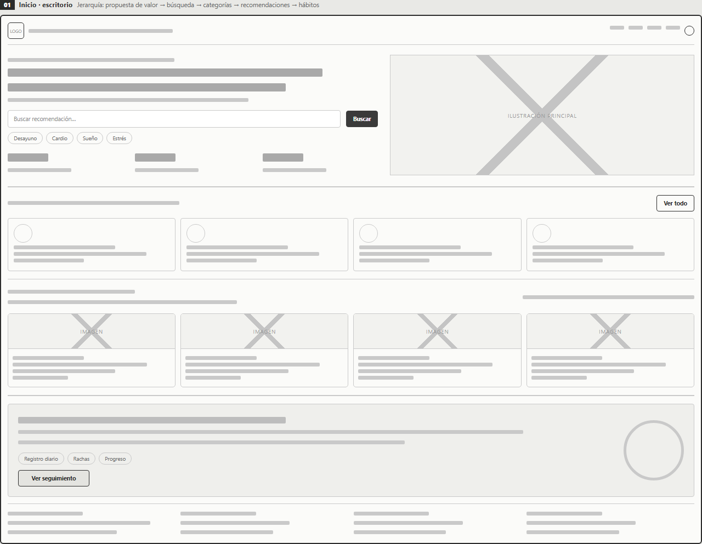
La pantalla de explorar concentra la búsqueda y el filtrado. El encabezado de la vista incluye migas de pan, título, descripción y una barra de filtros con buscador, nivel, duración y orden. Debajo se ubican los chips de categoría y el contador de resultados. La rejilla de tarjetas ocupa el resto de la pantalla y el estado vacío reemplaza la rejilla cuando no hay coincidencias. La Figura 3 presenta esta estructura.
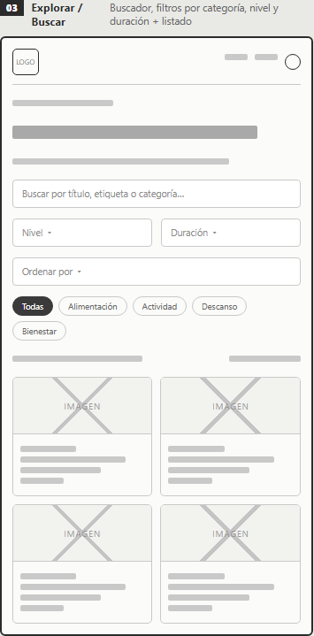
El detalle se divide en dos columnas: el contenido principal (imagen, categoría, título, resumen, justificación, pasos, beneficios y etiquetas) y un panel lateral con datos clave y acciones (favoritos y seguimiento). En móvil el panel se desplaza debajo del contenido. La jerarquía busca que el usuario comprenda qué es la recomendación, por qué se le sugiere y cómo ponerla en práctica. La Figura 4 muestra la estructura.
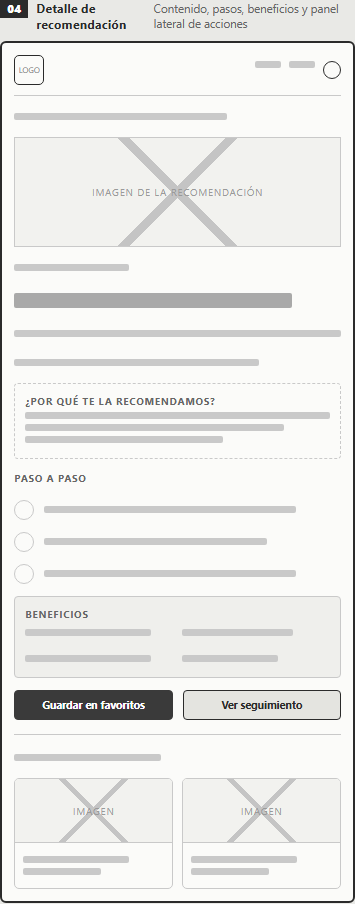
La pantalla de autenticación contrapone un panel de marca con beneficios y un panel de formulario con pestañas. El formulario de registro incluye nombre, correo, contraseña, confirmación y aceptación de la política de datos. Los mensajes de validación se muestran mediante notificaciones y el formulario conserva el foco lógico. La Figura 5 presenta la estructura.
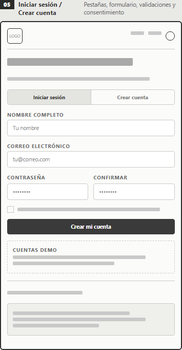
El perfil se organiza en una cabecera con identidad del usuario y un cuerpo en dos columnas: el formulario (datos personales, actividad, medidas, objetivo, alergias, notas y consentimiento) y el panel lateral (IMC, porcentaje de perfil completo y privacidad). La Figura 6 muestra la estructura.
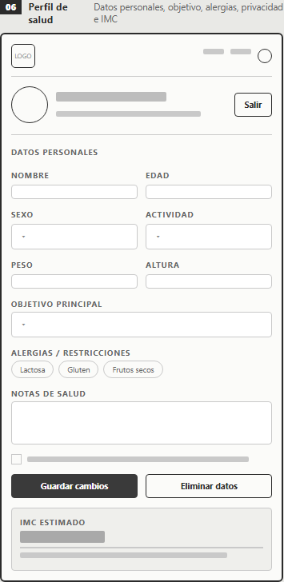
La vista de favoritos reutiliza la rejilla de tarjetas y añade un encabezado de sección, un contador y un estado vacío con llamada a la acción. Su estructura es deliberadamente simple para que el usuario reconozca el mismo lenguaje visual del catálogo. La Figura 7 muestra la estructura.
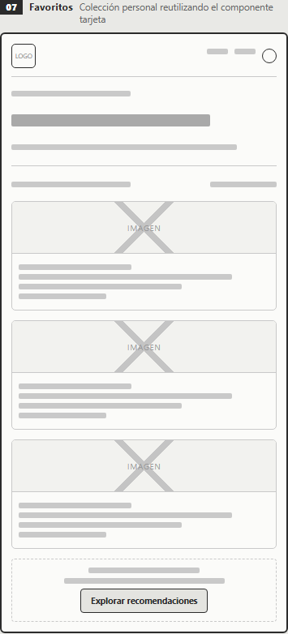
La pantalla de hábitos presenta tres métricas en la parte superior, un encabezado de sección y una fila por hábito. Cada fila incluye ícono de categoría, título, meta, frecuencia, racha y siete botones diarios. La Figura 8 presenta la estructura.
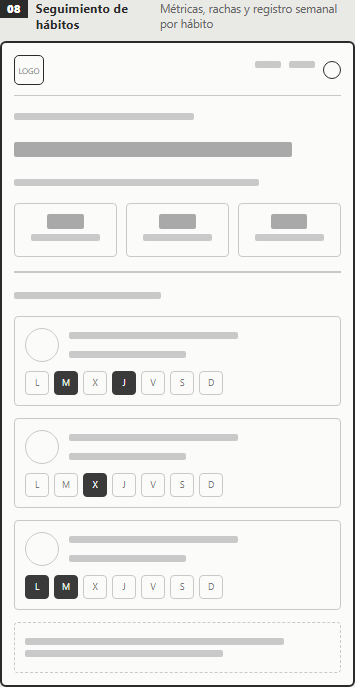
La gestión de contenidos combina una tabla comparativa con un formulario lateral. La tabla muestra título, categoría, duración, nivel y acciones; el formulario permite crear o editar con campos de título, categoría, resumen, descripción, duración, nivel, etiquetas y pasos. La Figura 9 muestra la estructura.
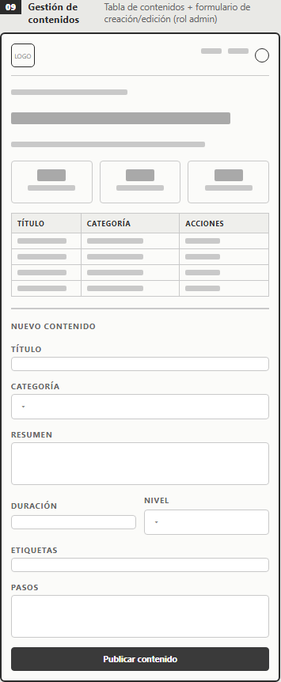
La estructura propuesta asigna un espacio explícito a cada requerimiento funcional: el perfil y el encabezado resuelven RF1; las tarjetas, el detalle y la administración resuelven RF2; el buscador y los filtros resuelven RF3; la sección “Para ti”, los avisos y el orden resuelven RF4; y los favoritos y el seguimiento resuelven RF5. La Tabla 4 resume esta correspondencia.
| RF | Elementos estructurales | Pantallas |
|---|---|---|
| RF1 | Formularios de acceso, bloques de perfil, consentimiento, eliminación de datos, menú por rol. | Login, registro, perfil, encabezado, administración. |
| RF2 | Rejilla de tarjetas, detalle, tabla de catálogo, formulario de contenido, acciones de edición. | Inicio, explorar, detalle, administración. |
| RF3 | Buscador, chips de categoría, selectores de nivel, duración y orden, contador, estado vacío. | Inicio, explorar. |
| RF4 | Sección “Para ti”, aviso de afinidad, advertencia de alérgenos, orden por relevancia. | Inicio, explorar, detalle, perfil. |
| RF5 | Botón de favoritos, contador, rejilla de favoritos, métricas, fila de hábito, botones diarios. | Inicio, detalle, favoritos, hábitos. |
El mockup aplica el diseño visual sobre la estructura del wireframe. La intención estética es transmitir naturaleza, cercanía y confianza sin caer en un tono infantil: verde profundo para la marca, lima para la vitalidad, ámbar para la energía y coral para las acciones afectivas como favoritos. La tipografía combina Poppins para títulos —geométrica, amable y con buen peso— e Inter para el texto, por su legibilidad en pantalla. La iconografía es de trazo lineal, con un grosor coherente de 1,8 px sobre una retícula de 24 px.
El sistema se documentó y aplicó de forma consistente en todas las pantallas. La Figura 10 presenta la paleta, las muestras tipográficas, los componentes y la iconografía. Las Tablas 5 y 6 resumen las decisiones.
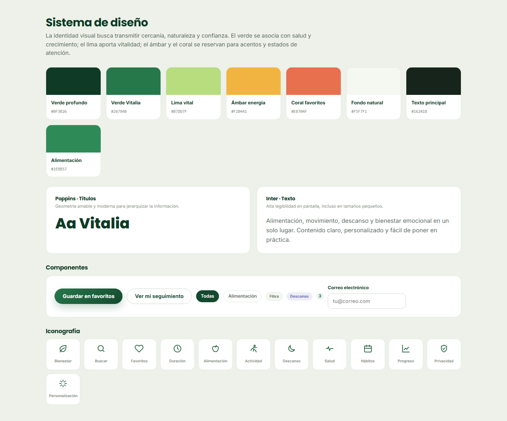
| Color | Hex | Uso |
|---|---|---|
| Verde profundo | #0F3B26 | Marca, encabezados, footer y textos de máximo contraste. |
| Verde Vitalia | #26784B | Acciones primarias, enlaces y estados activos. |
| Lima vital | #B7DD7F | Acentos, progreso y elementos de vitalidad. |
| Ámbar energía | #F2B441 | Alertas informativas, rachas y métricas de energía. |
| Coral favoritos | #E8704F | Favoritos activos y acciones de atención. |
| Fondo natural | #F5F7F1 | Fondo general de la aplicación. |
| Texto principal | #16241B | Texto de lectura y títulos secundarios. |
| Elemento | Fuente / peso | Uso |
|---|---|---|
| Título principal | Poppins 800, 2,5–3,8 rem | Mensaje de valor del hero; escala fluida con clamp(). |
| Títulos de sección | Poppins 700, 1,6–2,2 rem | Jerarquía de bloques y pantallas. |
| Títulos de tarjeta | Poppins 600, 1,05 rem | Nombre de la recomendación. |
| Texto de lectura | Inter 400, 0,86–1,06 rem | Descripciones, párrafos y ayudas. |
| Etiquetas y metadatos | Inter 600–700, 0,68–0,8 rem | Chips, tags, duración, nivel y estados. |
Color. El verde es el color dominante porque se asocia culturalmente con salud, naturaleza y crecimiento. El lima se usa con moderación para evitar fatiga visual y para señalar progreso. El ámbar y el coral se reservan para información y acciones que requieren atención, lo que crea una jerarquía cromática clara. Los fondos claros y las superficies blancas favorecen la legibilidad y el descanso visual.
Tipografía. Poppins aporta personalidad a los títulos y Inter garantiza legibilidad en tamaños pequeños, especialmente en móvil. La escala es fluida para adaptarse a distintos anchos sin saltos bruscos. Las etiquetas usan mayúsculas y espaciado para diferenciarse del texto de lectura.
Iconografía e ilustración. Los íconos lineales mantienen un lenguaje común y se colorean con la categoría. La ilustración del hero es un vector de un bowl saludable que comunica la temática sin depender de fotografías y mantiene el peso del recurso bajo. Las tarjetas usan un fondo degradado por categoría y un ícono central para que el catálogo sea reconocible incluso antes de leer.
Composición y espaciado. Se usan radios amplios (14–28 px), sombras suaves y mucho espacio en blanco para transmitir calma. La retícula de 12 columnas se adapta a cuatro, dos y una columna. Los componentes comparten bordes, radios y transiciones para que la interfaz se sienta coherente. Las acciones primarias son verdes y llenas; las secundarias son blancas con borde; las acciones destructivas usan un rojo suave.
Accesibilidad visual. El texto principal sobre fondo claro y el texto blanco sobre verde profundo mantienen un contraste alto. Los estados de favoritos y hábitos combinan color, ícono y texto. Los formularios tienen etiquetas visibles y mensajes de ayuda. El foco es visible y las áreas interactivas son amplias.
Las Figuras 11 a 18 presentan las pantallas de escritorio y las Figuras 19 a 21 las variantes móviles. Todas las capturas provienen del prototipo navegable, por lo que el mockup y el prototipo comparten la misma implementación. La galería completa, con imágenes ampliables, está disponible en mockup.html.
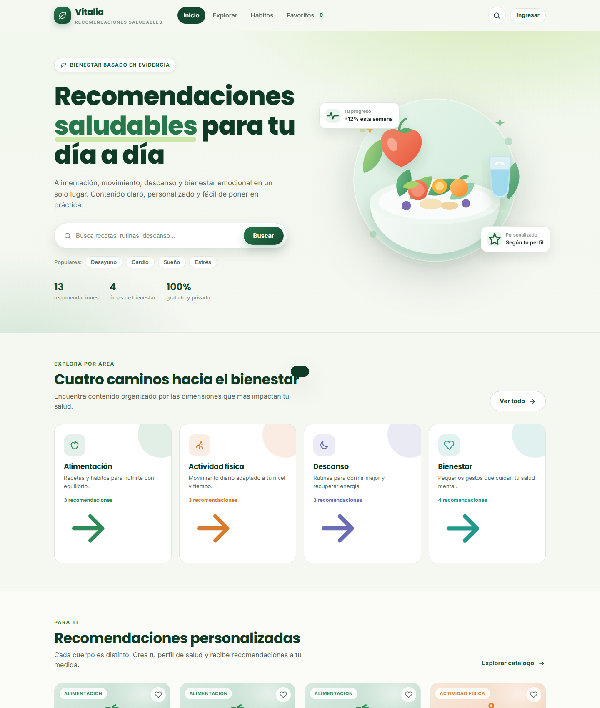
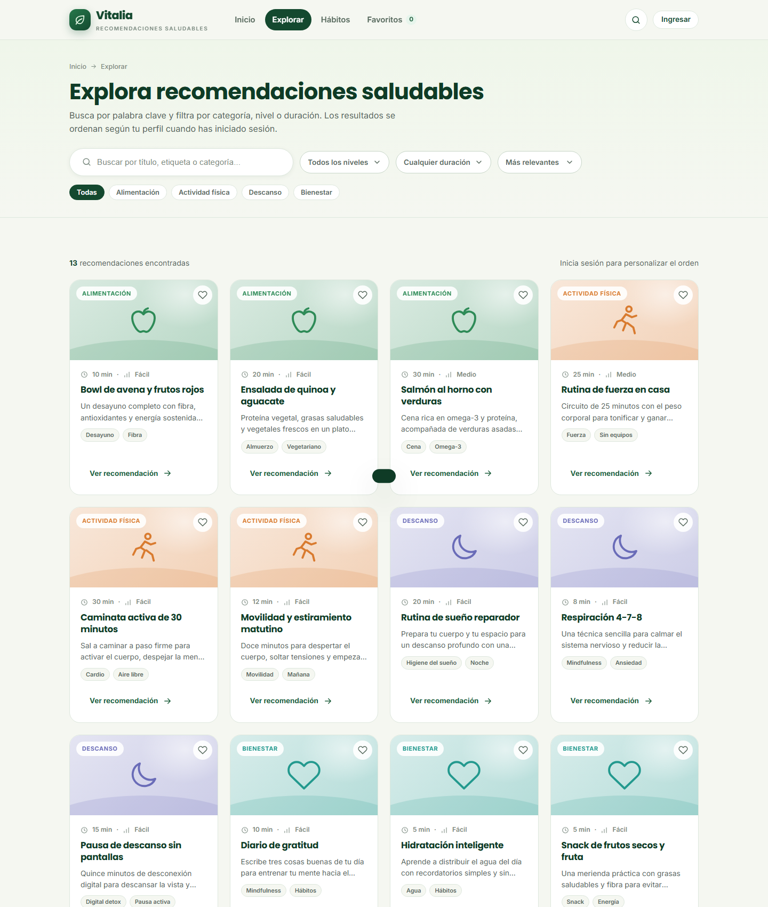
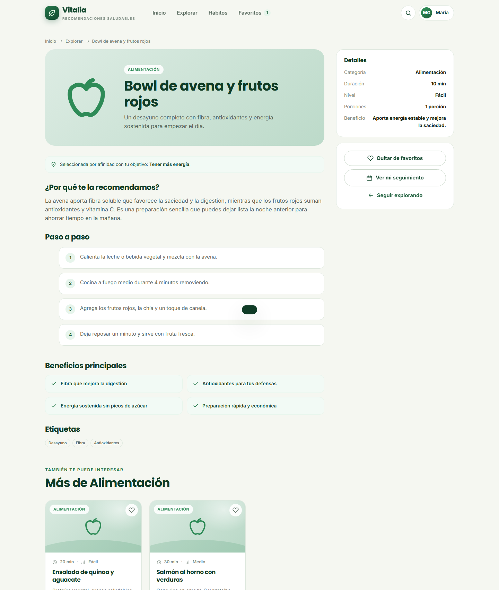
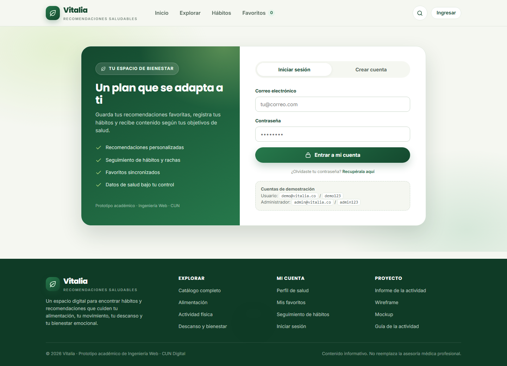
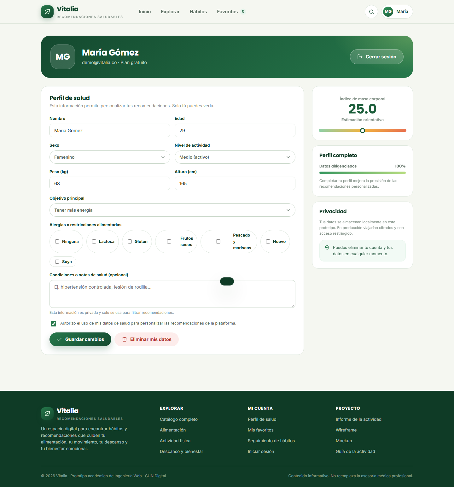
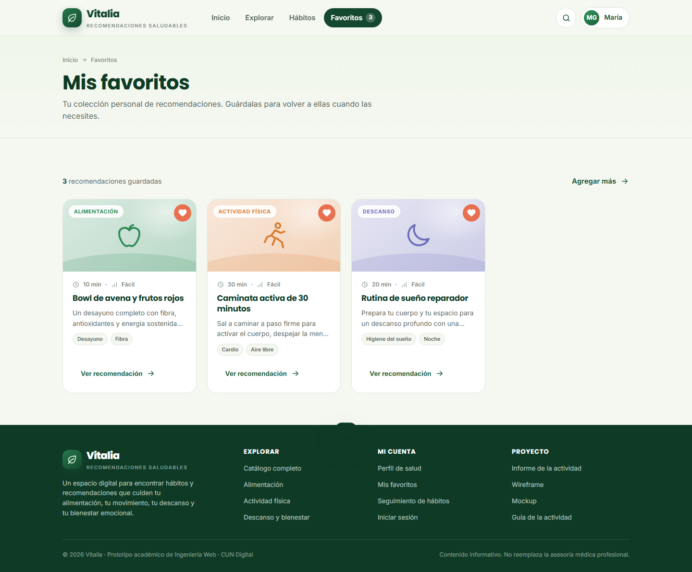
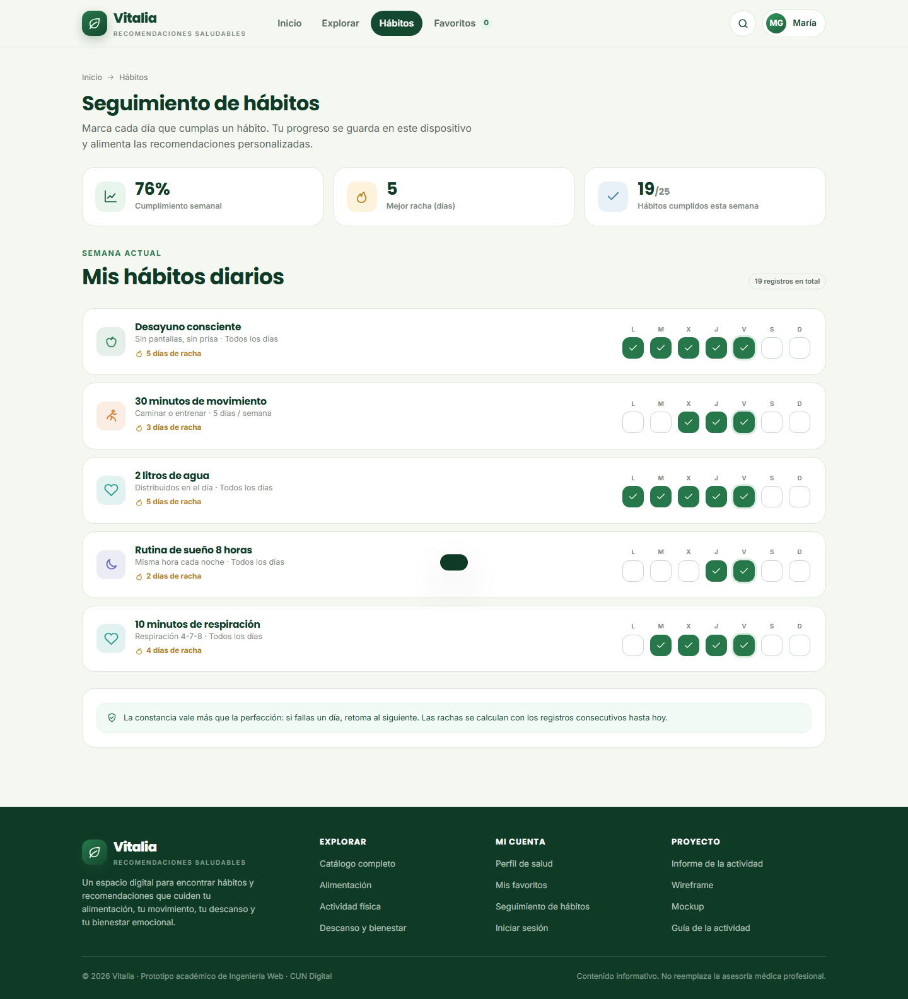
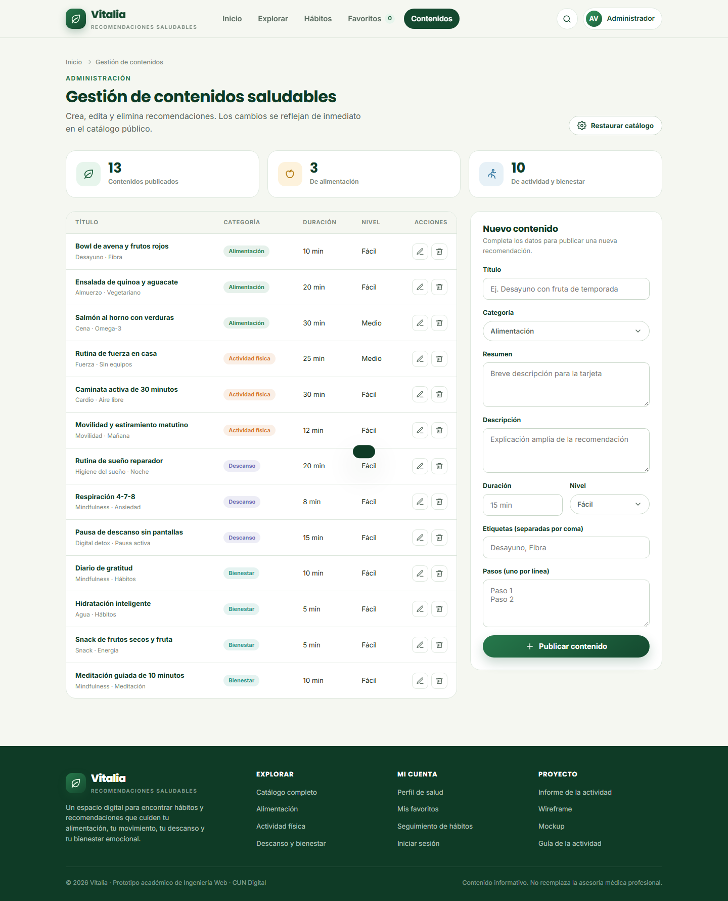
Las variantes móviles conservan la identidad y la jerarquía, pero reorganizan el contenido en una columna. El encabezado muestra el menú colapsable y el avatar; el hero prioriza la ilustración y el buscador; las tarjetas ocupan el ancho completo; los filtros se apilan y los botones se amplían. Las Figuras 19 a 21 muestran el resultado en un ancho de 390 px con densidad 2x.
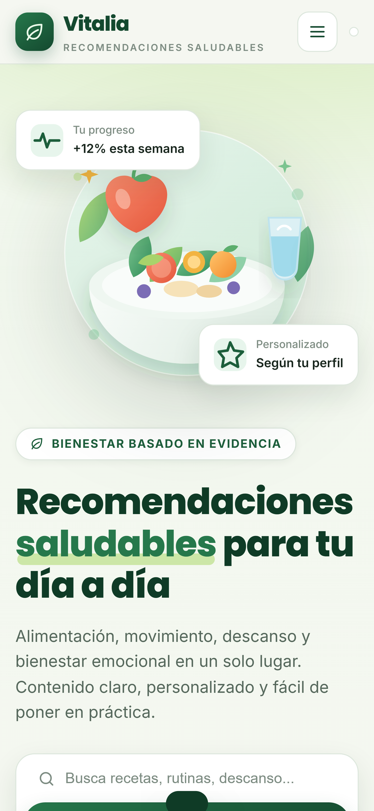
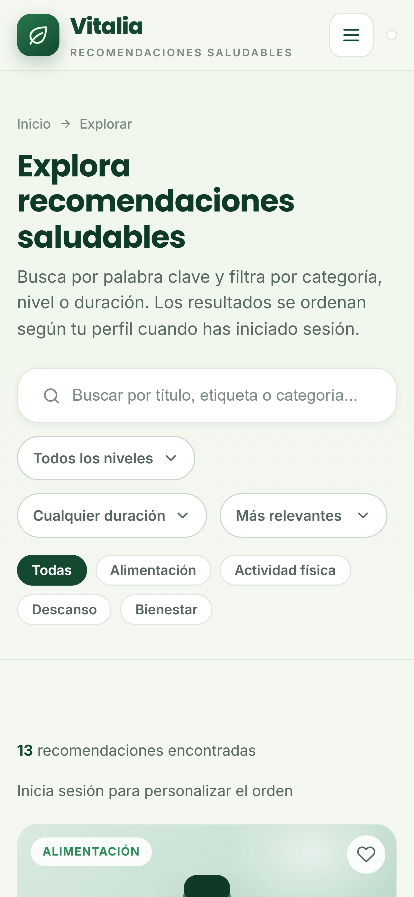
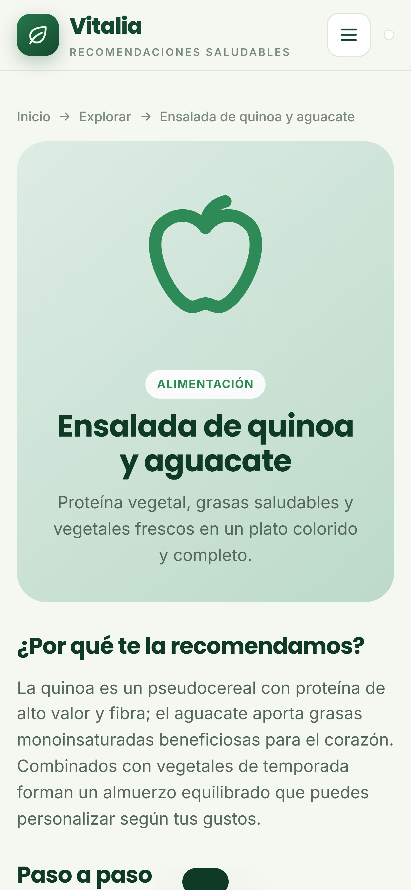
El prototipo es una aplicación web navegable construida con HTML5, CSS3 y JavaScript, sin dependencias externas de interfaz. Implementa las ocho vistas principales, un enrutador por hash, estado persistente en localStorage, búsqueda y filtrado en tiempo real, personalización por reglas, favoritos, seguimiento de hábitos y gestión de contenidos. La arquitectura separa los datos (assets/js/datos.js) de la lógica y las vistas (assets/js/app.js), y los estilos se concentran en assets/css/estilos.css.
La Tabla 7 describe los cinco flujos principales y las rutas que los soportan. Todos los flujos se pueden recorrer con las cuentas de demostración y conservan el estado entre pantallas.
| Flujo | Pasos | Rutas / evidencia |
|---|---|---|
| Buscar y consultar | Inicio → búsqueda o chip → explorar → filtros → detalle → guardar favorito. | #/inicio, #/explorar, #/detalle/r1. |
| Registro y perfil | Login → crear cuenta → completar perfil de salud → guardar → recomendaciones personalizadas. | #/login, #/perfil. |
| Favoritos | Detalle o tarjeta → guardar → contador → favoritos → quitar. | #/favoritos; Figura 16. |
| Hábitos | Hábitos → marcar día → actualizar racha y progreso → desmarcar si es necesario. | #/habitos; Figura 17. |
| Administración | Login admin → contenidos → crear / editar / eliminar → ver cambio en el catálogo. | #/admin; Figura 18. |
Se ejecutaron pruebas manuales y automatizadas de navegación. La verificación automatizada con Chrome DevTools Protocol recorrió las rutas principales, comprobó que el contenido se renderizara, que las imágenes cargaran y que no existiera desbordamiento horizontal en 1440 px y 390 px; no se registraron errores de JavaScript. La Tabla 8 presenta los casos de prueba funcionales.
| Caso | Procedimiento | Resultado esperado | Estado |
|---|---|---|---|
| Búsqueda por texto | Escribir “sueño” en explorar. | Se muestran recomendaciones relacionadas y el contador se actualiza. | Aprobado |
| Combinación de filtros | Seleccionar categoría Descanso y nivel Fácil. | Solo se muestran coincidencias y el estado vacío aparece si no hay. | Aprobado |
| Registro e inicio de sesión | Crear una cuenta y volver a ingresar. | La sesión se conserva y el encabezado muestra el nombre. | Aprobado |
| Perfil de salud | Cambiar el objetivo y guardar. | El orden de “Para ti” cambia y el perfil se actualiza. | Aprobado |
| Favoritos | Guardar y quitar una recomendación. | El contador y la vista de favoritos reflejan el cambio. | Aprobado |
| Hábitos | Marcar y desmarcar un día. | La racha y el porcentaje semanal se recalculan. | Aprobado |
| Administración | Crear un contenido con la cuenta admin. | El contenido aparece en el catálogo público. | Aprobado |
Prototipo navegable: prototipo.html (incluido en la carpeta proyecto_vitalia de la entrega). Se abre directamente en el navegador, sin servidor ni instalación.
Cuenta de usuario demo: demo@vitalia.co / demo123.
Cuenta de administrador demo: admin@vitalia.co / admin123.
Publicación: el proyecto está publicado en GitHub Pages y se puede abrir desde cualquier equipo con conexión a Internet: https://jorgepalaciod.github.io/vitalia/. El prototipo no depende de backend; el estado se conserva en el navegador.
El prototipo también se acompaña de la galería de mockups (mockup.html) y del wireframe (wireframe.html), de modo que el evaluador puede contrastar los tres niveles de concreción. Las Figuras 19 a 21 muestran la experiencia móvil; la navegación completa se verifica mejor abriendo el prototipo en el navegador.
El prototipo no incluye backend, autenticación real ni base de datos; su estado vive en el navegador y se pierde si el usuario borra los datos del sitio. La personalización es un modelo de reglas explicable, no un sistema de aprendizaje automático. No se realizaron pruebas formales de usabilidad con usuarios ni una auditoría de accesibilidad con lectores de pantalla. Como trabajo futuro se propone: implementar una API y una base de datos, añadir autenticación segura y recuperación de contraseña, realizar pruebas con usuarios, auditar accesibilidad con WCAG 2.2, medir rendimiento con Lighthouse, ampliar el catálogo con contenido revisado por profesionales de la salud y agregar recordatorios y notificaciones opt-in.
Como dificultad principal se identificó el equilibrio entre la riqueza del catálogo y la simplicidad de la interfaz: demasiados filtros o metadatos pueden abrumar, pero muy pocos reducen la utilidad. También exigió cuidado la adaptación de una interfaz densa a móvil y la persistencia del estado entre vistas sin recargar la página. Estas dificultades se resolvieron con iteración, componentes reutilizables y pruebas de navegación en distintos anchos.
Las referencias se presentan con un formato académico coherente, adaptado de APA séptima edición y conforme a los lineamientos de citación de CUNDigital.
Adobe Inc. (2023). Adobe XD: diseño y prototipado de experiencias de usuario [Software, discontinuado]. https://www.adobe.com/products/xd.html
AlexCG Design. (2020). Curso Figma desde CERO | Curso de Introducción a Figma [Video]. YouTube. https://www.youtube.com/watch?v=SqO-olNvnU
Balsamiq Studios. (2024). Balsamiq: fast, focused wireframing [Herramienta en línea]. https://balsamiq.com/
Congreso de Colombia. (2012). Ley 1581 de 2012, por la cual se dictan disposiciones generales para la protección de datos personales. Diario Oficial No. 48.587.
Corporación Unificada Nacional de Educación Superior. (2026). Guía de Actividad de Construcción Aplicada (ACA): Ingeniería Web [Documento de la asignatura]. CUN Digital.
Dribbble. (2024). Dribbble: the leading destination to find and showcase creative work [Comunidad en línea]. https://dribbble.com/
EDteam. (2017). Minicurso de Balsamiq Mockups (1) - Los wireframes y la interfaz [Video]. YouTube. https://www.youtube.com/watch?v=4WqfxF1QjTM
Figma. (2024). Figma: the collaborative interface design tool [Software en línea]. https://www.figma.com/
Google. (2024). Google Fonts [Catálogo tipográfico en línea]. https://fonts.google.com/
International Organization for Standardization. (2019). ISO 9241-210:2019. Ergonomics of human-system interaction — Part 210: Human-centred design for interactive systems. ISO.
InVision. (2024). InVision: digital product design platform [Plataforma digital, servicio cerrado en diciembre de 2024]. https://www.invisionapp.com/
Mozilla Developer Network. (2024). MDN Web Docs [Documentación técnica en línea]. https://developer.mozilla.org/en-US/
Nielsen, J. (1994). 10 usability heuristics for user interface design. Nielsen Norman Group. https://www.nngroup.com/articles/ten-usability-heuristics/
W3C. (2023). Web Content Accessibility Guidelines (WCAG) 2.2. World Wide Web Consortium. https://www.w3.org/TR/WCAG22/
W3Schools. (2024). W3Schools: online web tutorials [Plataforma educativa en línea]. https://www.w3schools.com/